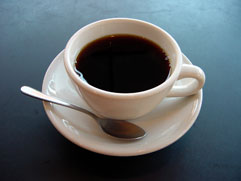

- Title Page
- Introduction
- The Milwaukee Journal Sentinel
- Investigative Reporting
- Early Stirrings
- Bisphenol A
- The Team
- Background Research
- Colburn Interview
- The Audit
- Industry View
- The EPA
- Into the Garret: Part 1
- A Difficult Meeting
- Into The Garret (Part 2): Breaking New Ground
- Art of Science Reporting
- Firsthand Analysis
- NTP Report
- What to write?
Art of Science Reporting
Rust was not sure this story fit the ordinary parameters of science reporting. Nonetheless, many of the customary rules applied. For example, too often scientific reports received insufficient skeptical scrutiny from reporters. The reason: both sides benefited from casting new research as a dramatic breakthrough. The scientist gained publicity—which often meant more funding, while the journalist got a great story. In 2003, for example, the press gave widespread attention to a religious sect that announced its scientists had cloned a seven-pound baby called “Eve.” While journalists and scientists raised doubts about the claims made by the "Raelians," the media covered the sensational story enthusiastically: CNN, MSNBC, and Fox, among others, all carried live coverage of the press conference where the announcement was made. But the Raelians’ headliner was a hoax. For the Journal Sentinel story, Rust was not reporting on one specific study. But she was aware of the dangers of adopting too wholeheartedly the findings of vom Saal and his sympathizers.
Then there was the challenge of complexity. Rust thought that, in general, the media did a good job of explaining complicated science issues. But some nuance was inevitably lost along the way. Defenders of science journalism pointed out that some simplification was inevitable in translating complex science for a lay audience. “Any type of reporting involves some loss of nuance because there’s only going to be so much space, and you have to makes things clear. The challenge is making sure that you have enough nuance to make what you’re writing true. In science journalism it’s probably going to be a little more challenging because fewer people may have a background in the subject,” says Spivak.
Instances of conflicting evidence also stymied journalists. Coffee, for example, drew mixed scientific reviews. Some studies hailed the benefits of enhanced mood and mental performance, while others described potential connections to cancer, hypertension and heart disease. Which was a journalist to believe? One defensive tactic was to remain on alert for any hidden agendas behind the scientific studies. Who funded the study? What were the politics of the sponsoring institution?

Coffee: draws mixed scientific reviews
The confusion was only enhanced when conflicting studies emerged consecutively, rather than simultaneously. That led to “yo-yo” journalism, with each study in turn earning sensational coverage, only to be turned on its head weeks or months later. Gullible consumers and anxious patients paid the price as they wildly modified their behavior to match the latest findings. A responsible science journalist faced with conflicting studies had to learn where to turn for unbiased judgments.
Finally, there was the temptation of “undeserved balance”—the distortions that could arise when, ironically, reporters were trying to be fair. Into this category fell stories in which journalists gave competing views equal weight, despite unequal evidence. For decades, this was the case with global warming. The great majority of studies indicated global warming was a real and growing phenomenon, yet the journalism often gave equal play to the views of the minority dissenters. “Too often journalists are afraid to say that the scientific evidence is overwhelming one way or another, so they try to balance it out too much when it’s not as balanced as that,” says Rust.
In fact, that was precisely what Katches had objected to in the Journal Sentinel team’s first draft. Now Rust had to take a stand.